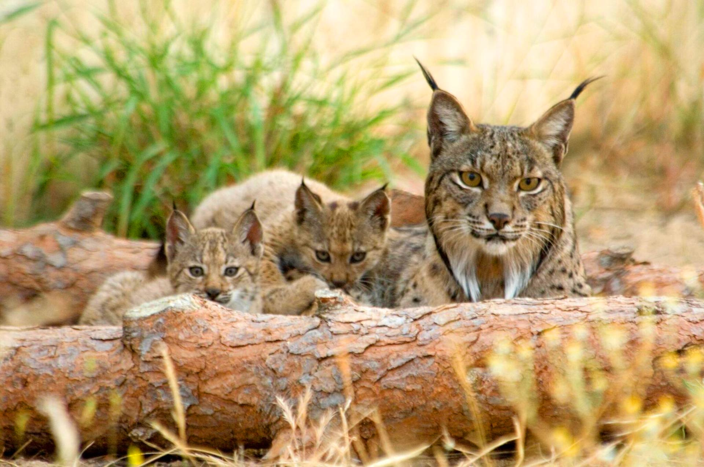

Geography
Climate

Spain can generally expect a Mediterranean climate, with hot, dry summers and mild, rainy winters. There are three different climate zones in Spain due to the countries large size. The northern costal regions are generally cool and humid, with an average annual temperature of 14 degrees celsius. Meanwhile the central plains ten to have cold winters and very hot summers for example Madrid, has an average temperature of 8 degrees in the winter and 23 in the summer. Finally downin the south the weather is very temperate except in summer when temperatures can reach about 40 degrees celsius.
Flora and Fauna
Because of Spains large variety of climates, it has a greater variety of natural vegetation thant any other country in Europe with around 8,000 cataloged species. In humas area's in the north of Spain there are a variety of Pine tree's and many other deciduous trees such as oak and chestnut. Juniper, pine and evergreens are particularly relevant in the dry south with many drought-resistant shrubs. Spain's diversity can be clearly seen in it's fauna, which shows shows how Spain combines Europe and Africa. The most popular mammals are wolves, foxes, lynx's, deer and wild boar. Spain is also a major pit stop for migratory birds who journey to and from Europe to Africa, like ducks and flamingo's. Spains rivers and sea's are home to a wealth of different fish and marine life, such as the popular trout and trench which influence the spanish diet. There are currently 192 endangered species that call Spain home such as the golden eagle, and iberian lynx who struggle to tackle the modern climate.
Terrain

Spain has a very diverse terrain with varying geographical features. While your view of Spain may primarily be beaches and coastlines, which there is plenty of, Spain is also home to various plateaus. The largest of these is Meseta Central which covers 40% of the country. The Pyrenees Mountains in the north that border France extend for 491 km and reah about 3,404 metres high. Finally if you are looking for something a little more exciting the Spanish owned Canary Islands feature a dormant volcano called Pico de Teide that calls for adventures and climbers alike.